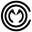
Composición cuyo material es la obra de los otros
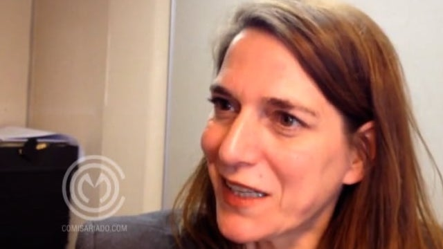
Nicole van Dijk
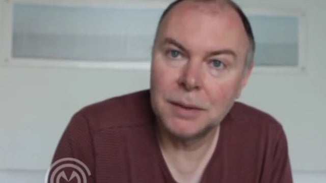
Paul Willemsen
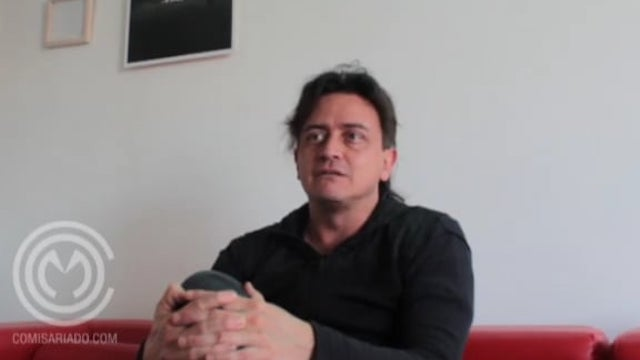
Santiago Rueda
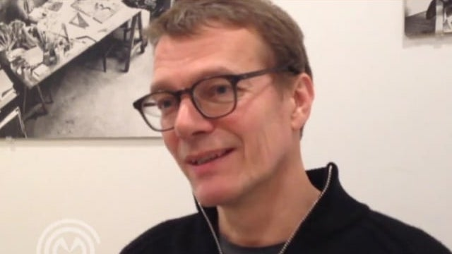
Jelle Bouwhuis
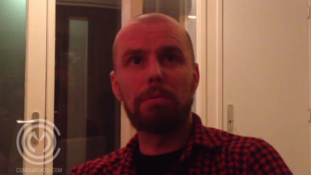
Rogier Cloin
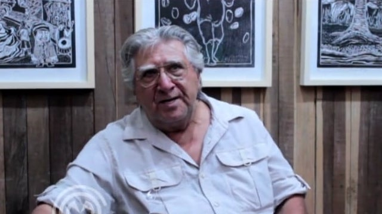
George Rivera
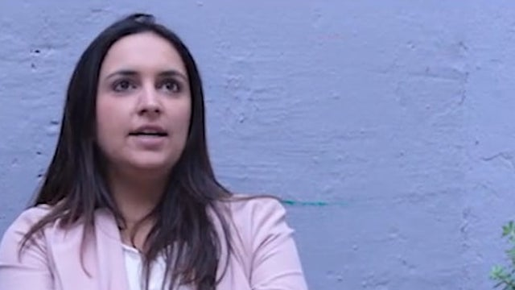
Catalina Acosta
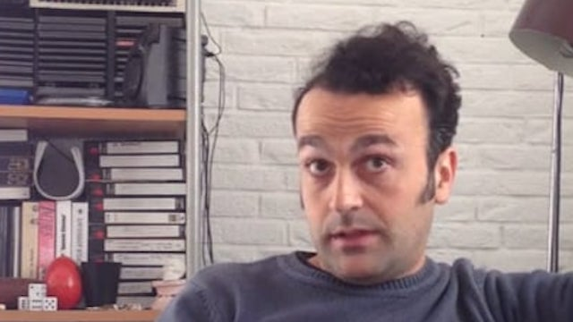
David Maroto
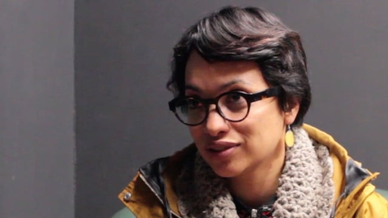
Amanda de la Garza
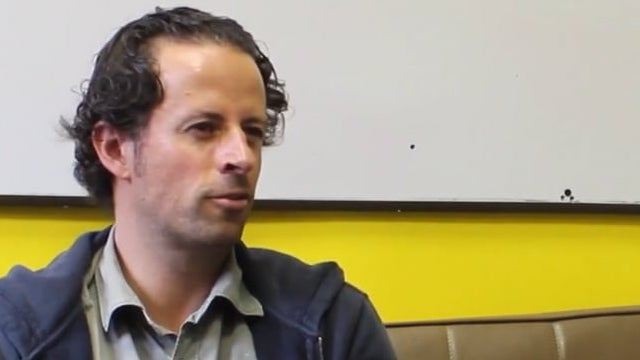
Lucas Ospina
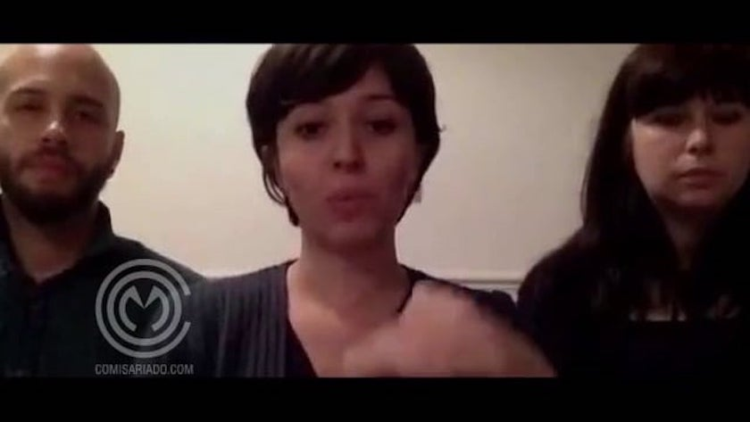
amaCollective
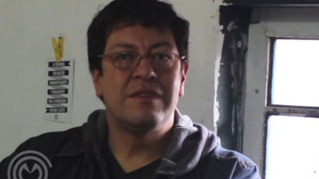
Franklin Aguirre
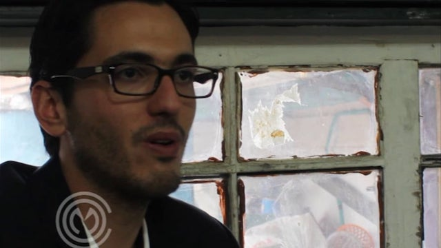
Nicolás Gómez
Álvaro Medina
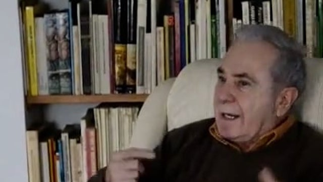
Eduardo Serrano
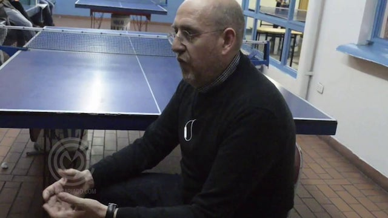
Fernando Castro
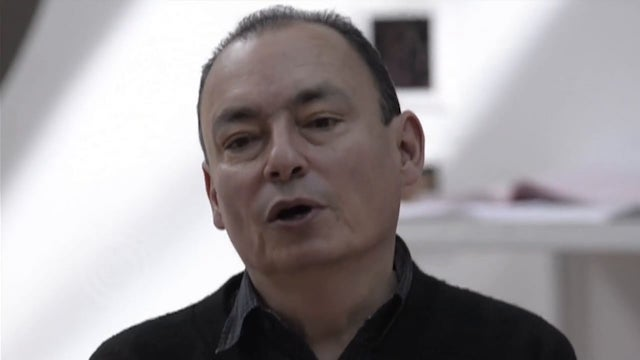
Carlos Salas
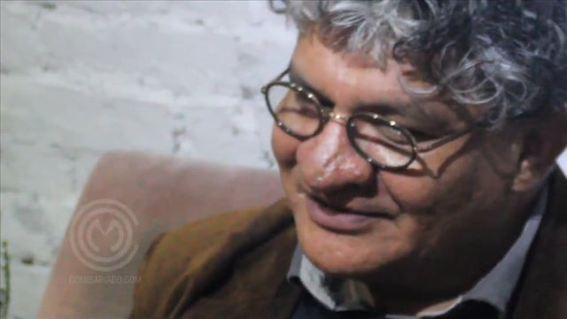
Luis Gerardo Morales
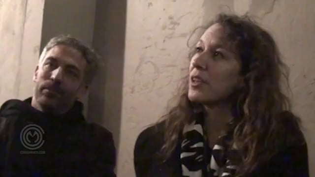
Galit Eilat / Oren Sagiv
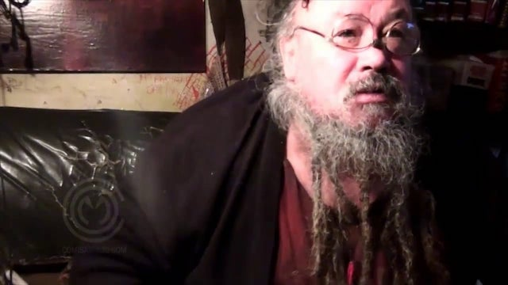
Museo de la Basura
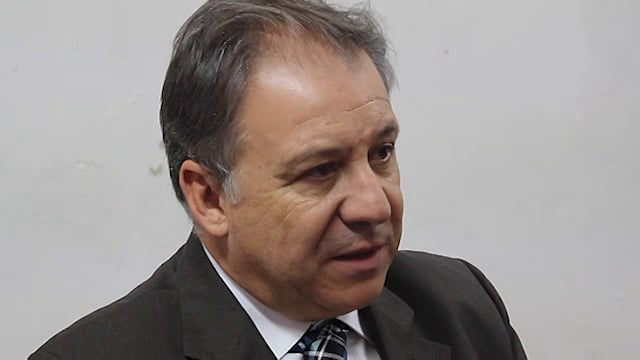
Rafael López
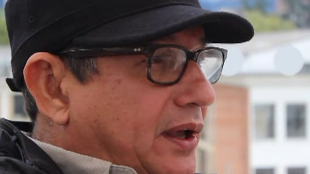
José Antonio Navarrete
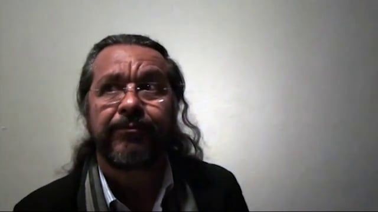
Mario de Souza Chagas
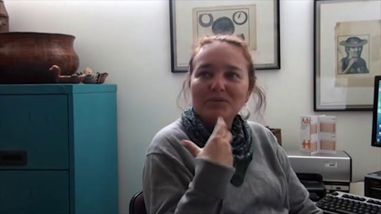
Fabíola Andréa Silva
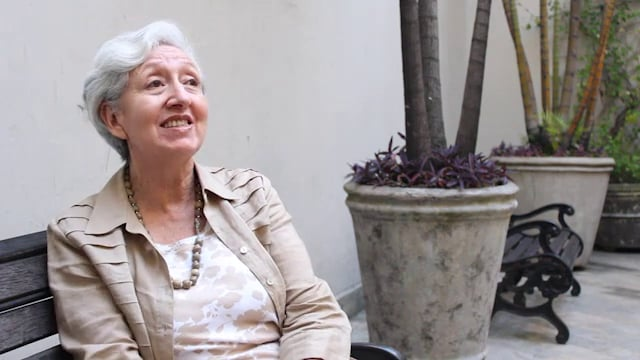
Nydia Gutiérrez
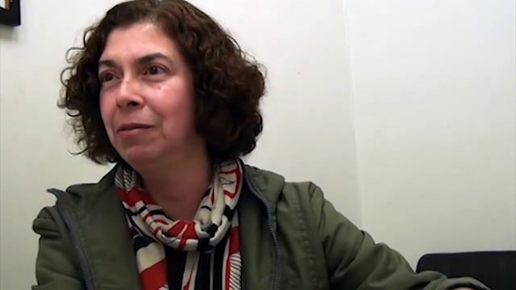
Marília Xavier Cury
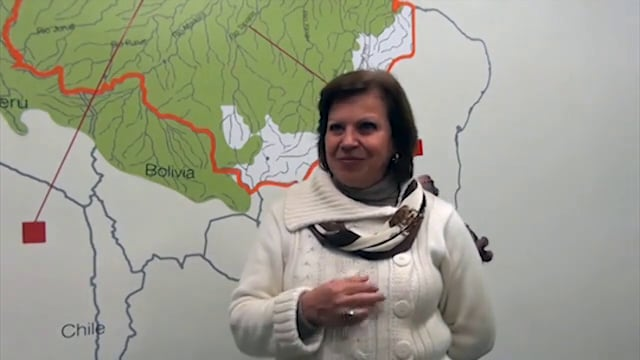
Sandra de la Torre Lacerda
Oscar Roldán-Alzate
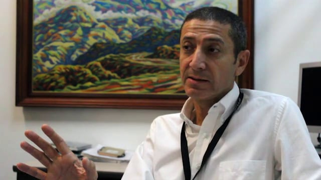
Fernando Valencia
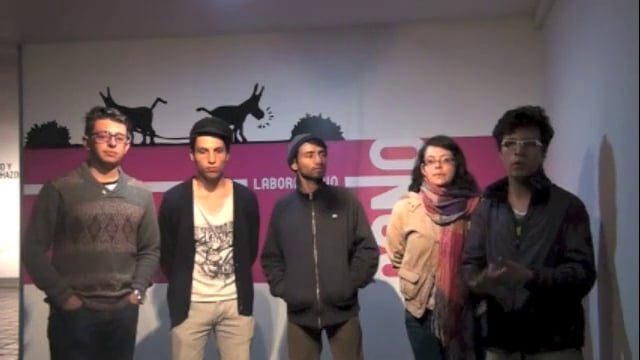
Laboratorio Cano 2013
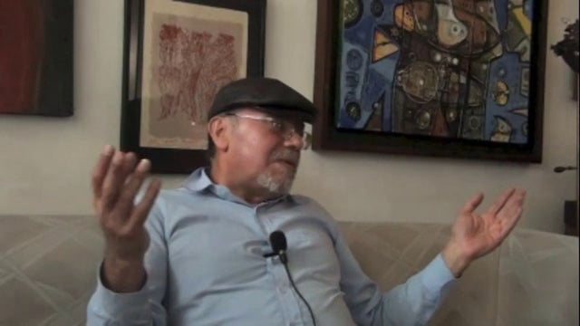
Fernando Guinard
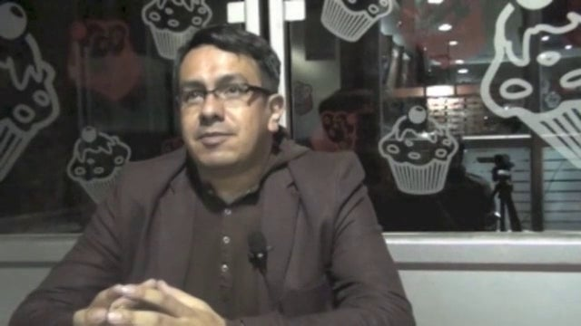
Jaime Cerón
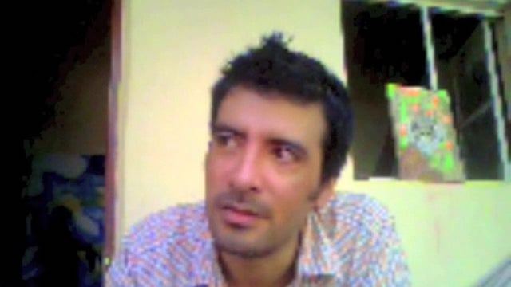
Cesar Agudelo
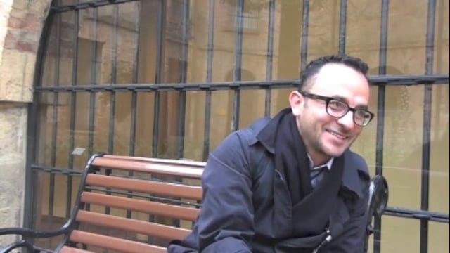
Guillermo Vanegas
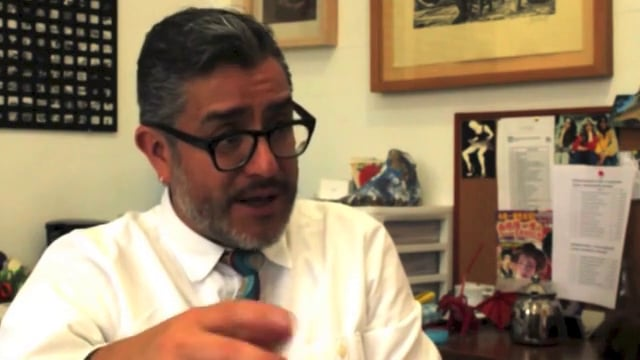
Eduardo Bernal
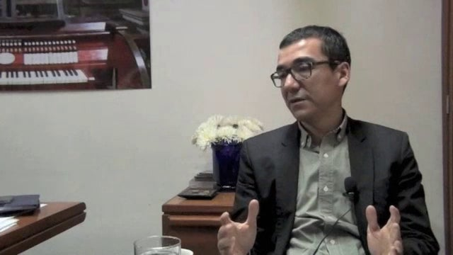
Alejandro Burgos
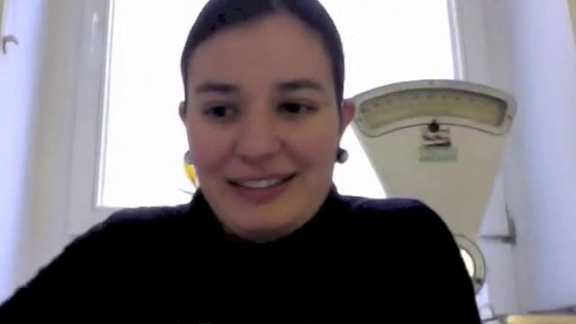
Olga Acosta
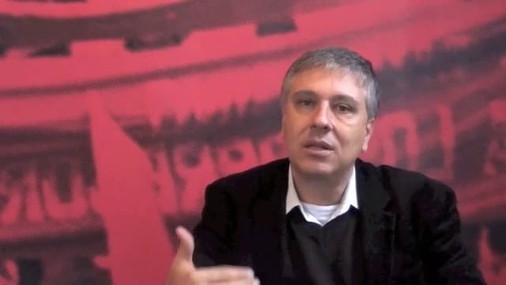
Camilo de Mello Vasconcellos
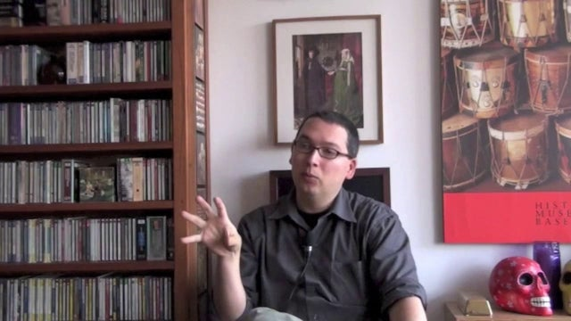
Camilo Sánchez
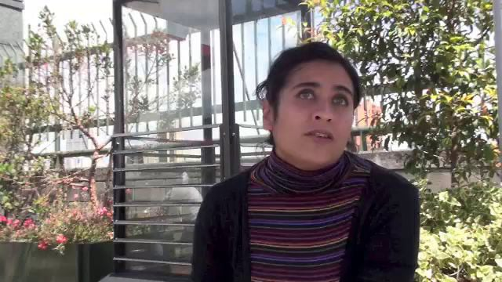
Sandra Rengifo
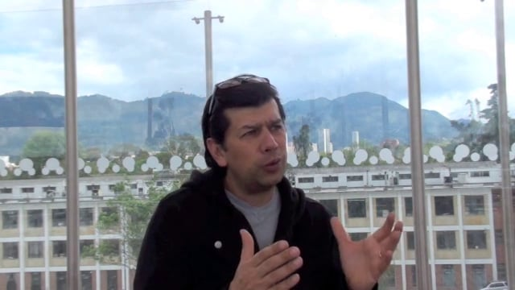
William López
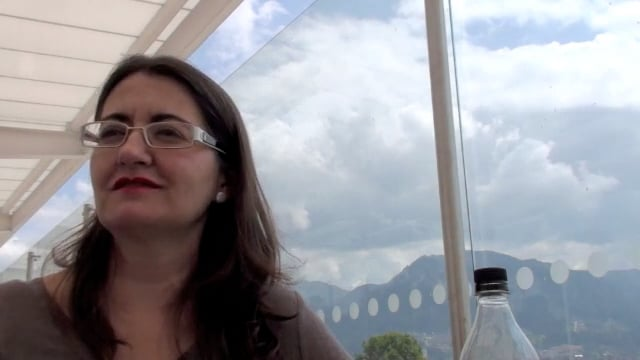
Isabel Tejeda
LAEXCUSA - Laboratorio de exploración curatorial, prácticas en transformación.
×